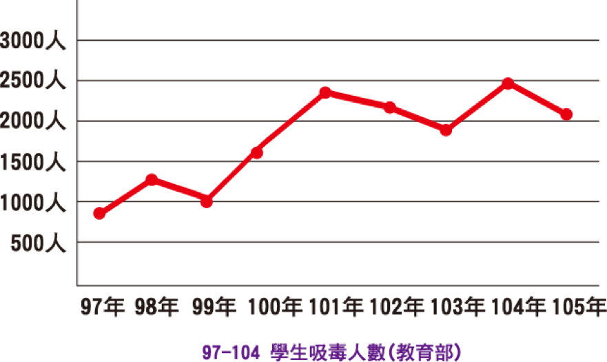

問題分析
在台灣70年代靠著科技產業創造了經濟奇蹟卻讓青壯一輩離鄉背井到大城市打拼，導致貧富差距日增月益，城鄉差距越來越大，尤其在教育資源更是分佈不均產生城鄉教育失衡的現象。
近日來，在報章雜誌我們會看到青年學子成為藥頭下線、車手等等的新聞，令人不勝唏噓，原因無他，這段長假裡，學生們有大把的時間，但沒有家長的陪伴、沒有正當的休閒活動、沒有規劃的假日，很難排解空虛的日子，家庭功能失常的學生，遇到有人陪他聊天、有吃、有喝還有得玩，何樂而不為？只是這些人「剛好」有藥物濫用的情形或是加入黑道，所以開始接觸毒品，一起加入幫派，這個問題有多嚴重？
台灣學生藥物濫用的問題，於97年開始上升到每年815人，自101年達到2,432人(教育部)，同年破獲7人少年集團年紀最小者僅國一年紀，甚至有兄弟檔於國小就開始吸毒，藥物濫用年齡層下降的問題，令各界憂心；此外還有黑道吸收成員的問題，內政部警政署 104 年施政重點與工作績效指出104 年查獲組織犯罪人數計2,452 人，其中具學生身分者有 211 人，占人數比例 8.60%，亦可看到黑道、幫派進入校園的嚴重性。
需求評估
所以，也許我們可以說，這群青少年需要的是情感的支持，生理的滿足(吃、喝的提供)與物品的獲得，而尋求保護、好玩都可以提供青少年歸屬感。
國中生在正值青少年發展階段，為兒童與成人間的過渡期；主要衝突核心在於自我認同、生活目標與生命意義的澄清，若無法達到自我認同則會產生自我混淆。
在這個階段的青少年一方想要擺脫家庭成為大人，一方面又無法全然的自立、獨力，從依賴家庭到完全獨立是需要漸進式的，此時身旁的陪伴者與引導者就相形重要。
校長這麼對我們說:「對於學生而言，最吸引他們的就是運動與音樂。其實這不難理解，運動除了對個人健康有益外，其實也是一個社會互動的場所，在運動中人與人之間有很多接觸、溝通和磨擦，給予學習處理人關係、建立社交圈子的機會。此外能培養人際間的合作精神，有時，個別隊員更可能需要為整隊的勝利而把自己放在次要的位置上而團隊的勝利能帶來個人的價值感、自我肯定與榮譽感。而音樂，在聆聽時可以紓發情緒，歌詞可以反應自己的心境，無形中達到治療的效果，若可以演奏音樂時，更可以把自我展現出來，所以運動與音樂可以吸引青少年不難理解。
本方案要解決的問題（我們想要解決什麼？）
我們期待透過在週末、長假時辦理音樂營的方式，除了讓青少年能在假日時，有地方可以去，有事情可以作，並讓他們可以「玩」音樂，降低他們孤單無聊的時間，增加他們展現自我的機會，進而對團隊有歸屬感、對自我有認同感，降低青少年為了吃、喝、玩、樂、認同與歸屬感而去到不良場所的可能性，同時也透過當地機構老師的陪伴，讓孩子們被關懷、被在乎，降低偏鄉學生自我否定的心態。
方案目標與目的（我們要怎麼解決）
過投入音樂資源，提供偏鄉地區的少年一個去處，陪伴他們渡過原本孤單無聊的時間，轉變為歡樂充實的時光，並發現自己有無限的可能。
1.暑期設立音樂專班，讓孩子在短時間學習音樂、建立自信，並找到自我認同。
2.開設長期音樂班，透過持續關心並追蹤孩子的狀況，陪伴孩子持續尋求自我認同及建立歸屬感。
3.定期舉辦音樂活動，用音樂與激勵當地居民，讓孩子有機會展現學習成果，使他們更有目標及動力學習。
＃短期音樂營
由國中提供場地、宣傳與招生，於暑期期間設立短期音樂專班或音樂營的方式進行，吸引孩子對音樂熱誠並建信心。
＃長期音樂班
音樂營或音樂專班為短期性的服務，由此先打開青少年對音樂的興趣與心房，但後續仍需要有穩定、長期的陪伴才能有效幫助到青少年，因此將投入長期的師資進入當地的組織，例如社團或教會團體等，由機構人員持續關心與陪伴，協會人員或音樂營的師資則定期前往探視。
＃定期音樂會
期待每季一次能與里長、區長等合作辦理音樂活動，透過音樂活動，帶動當地居民對生命、生活的熱誠，參加音樂課程的學員有展現的舞台，目前已與文武里合作，預計在2018.12月在大甲區公所前舉辦音樂會。
| 年度 | 活動/服務名稱 | 經費科目 | 經費項目 | 單價（元） | 數量 | 預算 |
|---|---|---|---|---|---|---|
| 108 | 音樂宅配通計畫 | 人事費 | 專案人員薪資 | 30,000 | 13.5個月 | 405,000 |
| 小計 | 405,000元 | |||||
| 108 | 大甲長期課程計畫 | 講師費 | 烏克麗麗 | 1,500 | 36堂 | 54,000 |
| 講師費 | 木箱鼓 | 1,500 | 36堂 | 54,000 | ||
| 講師費 | 電鋼琴 | 1,500 | 36堂 | 54,000 | ||
| 講師費 | 資料印製費 | 50 | 36次 | 1,800 | ||
| 教具 | 樂器費用 | 5,000 | 30人 | 150,000 | ||
| 雜支費 | 課程/雜支 | 100 | 36次 | 3,600 | ||
| 小計 | 317,400元 | |||||
| 108 | 7月大甲關懷音樂會 | 場地費 | 場地租借 | 10,000 | 1次 | 10,000 |
| 設備費 | 音響燈光架設 | 35,000 | 1次 | 35,000 | ||
| 人事費 | 歌手車馬費 | 10,000 | 2人 | 20,000 | ||
| 文宣 | 海報宣傳 | 500 | 50張 | 2,500 | ||
| 小計 | 67,500 | |||||
| 108 | 2月沙鹿寒假音樂營 | 住宿費 | 住宿費 | 800 | 10人X7天 | 56,000 |
| 交通費 | 活動交通費 | 3,000 | 4輛 | 12,000 | ||
| 伙食費 | 伙食費 | 70 | 10x20餐 | 14,000 | ||
| 師資 | 講師費 | 0 | 10x7天 | 0 | ||
| 教具 | 資料印製費 | 100 | 10次 | 1,000 | ||
| 其他 | 制服 | 500 | 10人 | 5,000 | ||
| 小計 | 280,200 | |||||
| 108 | 馬光長期課程計畫（寒假後開始）3-12月 | 講師費 | 烏克麗麗 | 1,5000 | 28堂 | 42,000 |
| 講師費 | 木鼓箱 | 1,5000 | 28堂 | 42,000 | ||
| 講師費 | 電鋼琴 | 1,500 | 28堂 | 42,000 | ||
| 講師費 | 資料印製費 | 50 | 28次 | 1,400 | ||
| 教具 | 樂器費用 | 5,000 | 30人 | 150,000 | ||
| 雜支費 | 課程/其他 | 100 | 28次 | 2,800 | ||
| 小計 | 280,200 | |||||
| 108 | 8月大甲、馬光暑假音樂營 | 住宿費 | 住宿費 | 800 | 20人X7天 | 112,000 |
| 交通費 | 活動交通費 | 3,000 | 8輛 | 24,000 | ||
| 伙食費 | 伙食費 | 0 | 20x20餐 | 0 | ||
| 師資 | 講師費 | 0 | 10人x7天 | 0 | ||
| 教具 | 資料印製費 | 100 | 20次 | 2,000 | ||
| 其他 | 制服 | 500 | 20人 | 10,000 | ||
| 小計 | 176,000 | |||||
| 108 | 11月馬光關懷音樂會 | 場地費 | 場地租借 | 10,000 | 1次 | 10,000 |
| 設備費 | 音響燈光架設 | 35,000 | 1次 | 35,000 | ||
| 人事費 | 歌手車馬費 | 10,000 | 2人 | 20,000 | ||
| 文宣 | 海報宣傳 | 500 | 50張 | 2,500 | ||
| 小計 | 67,500 | |||||
| 108年度合計 | 1,401,600元 | |||||
預計經費來源
| 補助單位 | 補助金額 | 百分比 |
|---|---|---|
| 總預算 | 1,401,600 | 100% |
| 愛鄉基金會 | 10,000 | 6.6% |
| 聯合勸募 | 300,000 | 19.8% |
| 信義房屋 | 50,000 | 3.3% |
| 自籌款 | 951,600 | 70% |
| 社名 | 姓名 | 捐款進度 | 金額 |
|---|